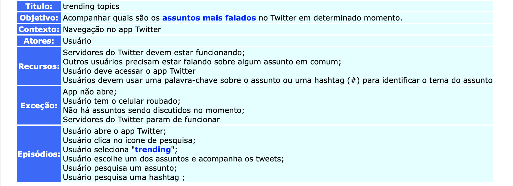
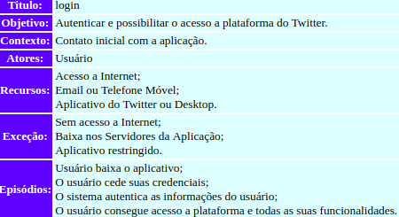
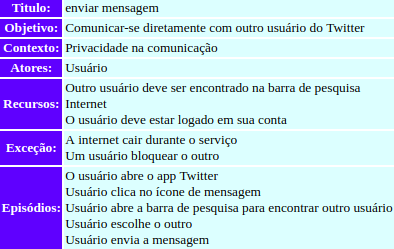
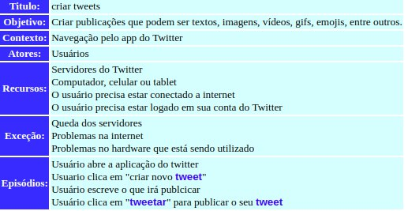
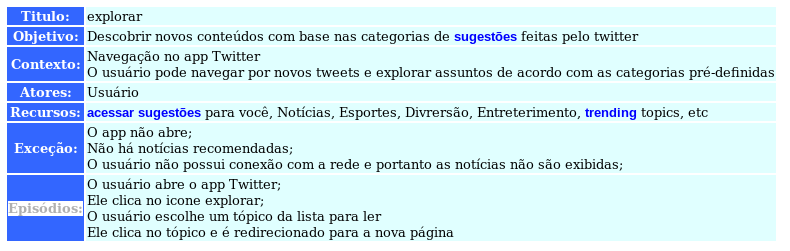

Sobre a Modelagem de requisitos de software
Trata-se da atividade de elaborar modelos capazes de representar características ou comportamentos de um software.Essa abordagem representa aspectos muito abstratos de maneira mais concreta e simplifica aspectos muito técnicos.
Sobre os Cenários
Um cenário é uma estratégia reconhecida para compreender as interações entre ambiente e sistema,bem como elicitar a parte comportamental do software, sua dinâmica e/ou seu fluxo.
Nossa equipe optou por utilizar a ferramenta C&L, disponível aqui, para projetar cenários para o Twitter.
Alguns cenários para o app Twitter
Trending Topics
Autor : Erick Giffoni Versão: 0.1

Login
Autor : Bruno Duarte Versão: 0.1

Enviar Mensagem
Autor : Eugênio Sales Versão: 0.1

Criar Tweets
Autor : Lorrany Azevedo Versão: 0.1

Explorar
Autor : Fernando Aguilar Versão: 0.1

Comentar Tweets
Autor : Aline Laureano Versão: 0.1

Versionamento de edições desta página
| Data | Autor | Descrição | Versão |
|---|---|---|---|
| 27/09/2019 | Erick Giffoni | Criação da página | 0.1 |
| 27/09/2019 | Bruno Duarte | Adição de cenário: Login | 0.2 |
| 27/09/2019 | Bruno Duarte | Adição de cenário: Enviar Mensagem | 0.3 |
| 30/09/2019 | Lorrany Azevedo | Adição de cenário: Criar Tweets | 0.4 |
| 30/09/2019 | Fernando Aguilar | Adição de cenário: Explorar | 0.5 |
| 30/09/2019 | Aline Laureano | Adição de cenário: Comentar Tweets | 0.6 |
| 11/10/2019 | Aline Laureano | Formatação do layout da página. | 0.7 |